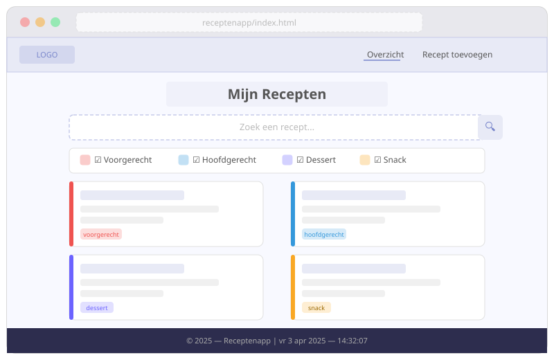
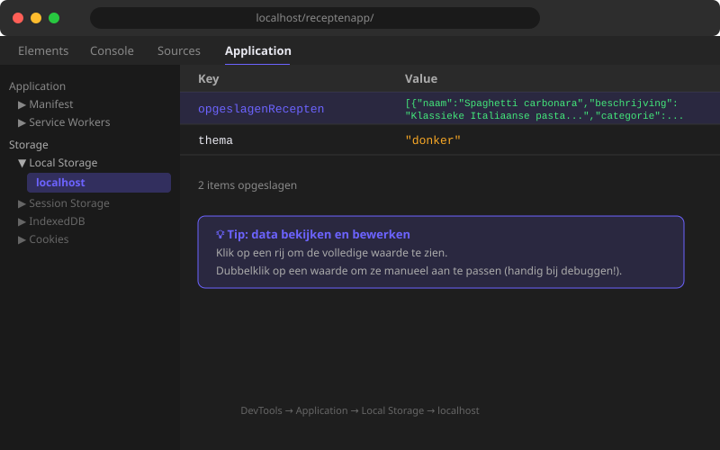

Receptenapp — Opzet & Structuur
- De bestandsstructuur van een meerpagina JavaScript-app uitleggen en opzetten
- Een array van objecten definiëren als databron voor een webapplicatie
- ES-modules correct gebruiken met
exportenimport - Een hulpfunctie schrijven die gegevens opslaat in localStorage
- HTML-pagina's opzetten met de correcte scriptkoppeling via
type="module" - CSS-variabelen gebruiken voor consistente kleurcodering per categorie
- Een taakomschrijving lezen en omzetten naar een functionele analyse
De opdrachtbrief
Je krijgt de volgende opdracht van je leerkracht als opdrachtgever. Lees ze grondig door vóór je verder gaat.
Maak een webapplicatie waarmee gebruikers recepten kunnen bijhouden. De app wordt volledig in de browser uitgevoerd — geen server, geen database. Recepten worden opgeslagen in de localStorage van de browser.
Functionele vereisten:
- Recepten toevoegen via een formulier (naam, categorie, ingrediënten, bereidingswijze)
- Alle recepten weergeven als kaarten op de pagina
- Recepten filteren op categorie
- Recepten zoeken op naam
- Recepten verwijderen
- Statistieken tonen (aantal per categorie, meest gebruikte categorie)
Technische vereisten:
- Pure HTML, CSS en JavaScript (geen frameworks)
- Gebruik localStorage voor opslag
- Mobile-friendly (responsive)
Oplevering: Één HTML-bestand + één JS-bestand + één CSS-bestand
Vul nu jouw eigen functionele analyse in. Kopieer het onderstaande sjabloon naar een nieuw document en vul elk onderdeel in:
## Mijn Functionele Analyse — Receptenapp
### Gebruikers
Wie gebruikt deze app? (bv. thuiskok, student, gezin)
### Schermen / pagina's
Lijst de pagina's/secties op die je nodig hebt:
- Homepagina met receptenlijst
- ...
### Functies (MoSCoW)
| Functie | Must / Should / Could / Won't |
|---|---|
| Recept toevoegen | |
| Recept weergeven | |
| ... | |
### Datastructuur
Hoe sla je een recept op? Schrijf een voorbeeld:
```javascript
const recept = {
id: ...,
naam: ...,
categorie: ...,
// ...
};
```
### Vragen aan de opdrachtgever
1. ...
2. ...Lever deze functionele analyse in bij je leerkracht vóór je begint te coderen. Pas na goedkeuring start je met de HTML-structuur.
9.1 Overzicht van de Receptenapp
In de volgende acht hoofdstukken (H09–H16) bouwen we stap voor stap een volledige Receptenapp. Dit is een webapplicatie waarmee je recepten kan bijhouden: je kan ze bekijken, toevoegen, filteren, zoeken en verwijderen — allemaal zonder server of database, puur in de browser.
Wat kan de app?
| Functionaliteit | Pagina |
|---|---|
| Overzicht van alle recepten in een grid | index.html |
| Recepten zoeken op naam of beschrijving | index.html |
| Filteren op categorie (voorgerecht / hoofdgerecht / dessert / snack) | index.html |
| Statistieken tonen (totaal, snelste, gemiddelde bereidingstijd) | index.html |
| Een nieuw recept toevoegen via een formulier | add.html |
| Een willekeurig basisrecept toevoegen | add.html |
| Alle recepten verwijderen | add.html |
| Recepten bewaren tussen sessies via localStorage | beide pagina's |

We gebruiken ES-modules (type="module" op de script-tag). Dit werkt enkel als je de bestanden serveert via een lokale server (bijv. de Live Server extensie in VS Code) of via een gewone webserver. Als je de HTML-bestanden rechtstreeks opent via file://, zal de import/export niet werken.
9.2 Bestandsstructuur opzetten
De app bestaat uit 7 bestanden, elk met een duidelijke verantwoordelijkheid.
| Bestand | Type | Verantwoordelijkheid |
|---|---|---|
index.html | HTML | Structuur van de overzichtspagina |
add.html | HTML | Structuur van de toevoegpagina |
stijl.css | CSS | Alle opmaak voor beide pagina's |
recepten.js | JS (module) | Databron: array van basisrecepten + export |
hulpfuncties.js | JS (module) | Herbruikbare hulpfuncties + export |
script.js | JS (module) | Logica voor index.html |
add.js | JS (module) | Logica voor add.html |
Maak een nieuwe map aan op je bureaublad of in je projectenmap, genaamd receptenapp/. Maak daarin de 7 bestanden aan (leeg voor nu). We vullen ze één voor één in.
9.3 recepten.js aanmaken — de databron
Dit bestand bevat de basisrecepten: een array van objecten die we bij de eerste keer opstarten in de app laden. Elk object heeft dezelfde structuur:
{
naam: "string", // naam van het recept
beschrijving: "string", // korte beschrijving
categorie: "string", // voorgerecht | hoofdgerecht | dessert | snack
bereidingstijd: number // in minuten
}Maak het bestand recepten.js aan en schrijf de volgende code:
// recepten.js
// [ADB09] Databron: array van basisrecepten — verdieping
export const basisRecepten = [
// --- Voorgerechten ---
{
naam: "Tomatensoep met balletjes",
beschrijving: "Een klassieke Belgische tomatensoep met kleine gehaktballetjes en vermicelli.",
categorie: "voorgerecht",
bereidingstijd: 35
},
{
naam: "Garnalencocktail",
beschrijving: "Verse grijze garnalen op een bedje van sla met roze saus.",
categorie: "voorgerecht",
bereidingstijd: 15
},
// --- Hoofdgerechten ---
{
naam: "Spaghetti carbonara",
beschrijving: "Klassieke Italiaanse pasta met ei, spek en parmezaan. Romig zonder room.",
categorie: "hoofdgerecht",
bereidingstijd: 25
},
{
naam: "Witloof met ham en kaassaus",
beschrijving: "Gestoofd witloof gewikkeld in ham, overgoten met een rijke kaassaus.",
categorie: "hoofdgerecht",
bereidingstijd: 50
},
// --- Desserts ---
{
naam: "Chocolademousse",
beschrijving: "Luchtige mousse van pure chocolade met slagroom en eiwitten.",
categorie: "dessert",
bereidingstijd: 20
},
// --- Snacks ---
{
naam: "Tomatensalsa met nachos",
beschrijving: "Verse salsa van tomaten, ui, koriander en limoen.",
categorie: "snack",
bereidingstijd: 10
}
];Let op de volgende aandachtspunten:
- Het keyword
exportstaat vóórconst. Zo kan een ander bestand deze array importeren. - De categorieën zijn exact:
"voorgerecht","hoofdgerecht","dessert","snack"(kleine letters, geen spaties). Dit is belangrijk voor de CSS-kleurcodering. bereidingstijdis een getal (number), geen string — we rekenen er later mee.
9.4 hulpfuncties.js aanmaken — herbruikbare functies
Dit bestand bevat functies die we op meerdere plaatsen in de app nodig hebben. Door ze hier centraal te definiëren, vermijden we herhaling.
// hulpfuncties.js
// [ADB09] Gegevens opslaan in localStorage — verdieping
export const updateLS = (lijst) => {
localStorage.removeItem('opgeslagenRecepten');
localStorage.setItem('opgeslagenRecepten', JSON.stringify(lijst));
};Waarom removeItem vóór setItem?
Je zou denken: setItem overschrijft toch gewoon de bestaande waarde? Dat klopt — maar door eerst expliciet te verwijderen, garanderen we een schone write. Dit is een defensief programmeerpatroon: we vermijden onverwachte bijwerkingen.
9.5 index.html aanmaken — de basisstructuur
Dit is de hoofdpagina van de app. Ze toont het overzicht van alle recepten. Merk op dat de script-tag type="module" heeft — dit is verplicht voor ES-modules.
<!DOCTYPE html>
<html lang="nl">
<head>
<meta charset="UTF-8">
<meta name="viewport" content="width=device-width, initial-scale=1.0">
<title>Receptenapp</title>
<link rel="stylesheet" href="stijl.css">
</head>
<body>
<header>
<h1 id="app-titel">Mijn Recepten</h1>
<nav>
<a href="add.html" class="knop-nav">+ Recept toevoegen</a>
</nav>
</header>
<main>
<section class="zoek-filter">
<input type="text" id="zoekbalk" placeholder="Zoek op naam...">
<div class="filter-knoppen">
<label><input type="checkbox" value="voorgerecht" checked> Voorgerecht</label>
<label><input type="checkbox" value="hoofdgerecht" checked> Hoofdgerecht</label>
<label><input type="checkbox" value="dessert" checked> Dessert</label>
<label><input type="checkbox" value="snack" checked> Snack</label>
</div>
</section>
<section id="statistieken">
<ul id="stats-lijst"><!-- Wordt gevuld door script.js --></ul>
</section>
<p id="geenrecepten" style="display: none;">
Geen recepten gevonden. <a href="add.html">Voeg een recept toe →</a>
</p>
<section class="recepten" id="recepten-sectie">
<!-- Receptkaarten worden hier toegevoegd door script.js -->
</section>
</main>
<footer>
<p>Receptenapp — gemaakt met HTML, CSS en JavaScript</p>
</footer>
<script src="script.js" type="module"></script>
</body>
</html>| Element | Waarvoor |
|---|---|
id="app-titel" | We passen de tekst aan via DOM in script.js |
id="zoekbalk" | Luistert naar input-events voor live zoeken |
input[type="checkbox"] | Filter op categorie |
id="statistieken" | Toont het aantal recepten per categorie |
id="geenrecepten" | Verborgen bericht als er geen resultaten zijn |
id="recepten-sectie" | Container waar de receptkaarten in komen |
type="module" | Verplicht voor ES-modules (import/export) |
9.6 add.html aanmaken — het formulier
De tweede pagina van de app bevat een formulier waarmee de gebruiker een nieuw recept kan toevoegen, samen met knoppen voor een willekeurig basisrecept en het wissen van alle recepten.
<form id="recept-formulier">
<div class="formulier-groep">
<label for="naam">Naam van het recept</label>
<input type="text" id="naam" placeholder="bv. Spaghetti carbonara" required>
</div>
<div class="formulier-groep">
<label for="beschrijving">Beschrijving</label>
<textarea id="beschrijving" rows="4" required></textarea>
</div>
<div class="formulier-groep">
<label for="categorie">Categorie</label>
<select id="categorie" required>
<option value="">-- Kies een categorie --</option>
<option value="voorgerecht">Voorgerecht</option>
<option value="hoofdgerecht">Hoofdgerecht</option>
<option value="dessert">Dessert</option>
<option value="snack">Snack</option>
</select>
</div>
<div class="formulier-groep">
<label for="bereidingstijd">Bereidingstijd (minuten)</label>
<input type="number" id="bereidingstijd" min="1" max="480" required>
</div>
<div class="formulier-knoppen">
<button type="submit" class="knop-primair">Recept toevoegen</button>
<button type="button" id="btn-willekeurig" class="knop-secundair">
Voeg willekeurig basisrecept toe
</button>
<button type="button" id="btn-verwijder-alle" class="knop-gevaar">
Verwijder alle recepten
</button>
</div>
</form>9.7 stijl.css — CSS-variabelen per categorie
Het kleurenschema van de app is gebaseerd op CSS-variabelen. De vier categorieën krijgen elk een eigen kleur:
| Categorie | Kleur | Hexcode |
|---|---|---|
| Voorgerecht | Rood | #e74c3c |
| Hoofdgerecht | Blauw | #3498db |
| Dessert | Paars | #9b59b6 |
| Snack | Oranje | #f39c12 |
:root {
--voorgerecht: #e74c3c;
--hoofdgerecht: #3498db;
--dessert: #9b59b6;
--snack: #f39c12;
}
/* Kleur linkerrand per categorie */
article.recept-kaart.voorgerecht { border-left-color: var(--voorgerecht); }
article.recept-kaart.hoofdgerecht { border-left-color: var(--hoofdgerecht); }
article.recept-kaart.dessert { border-left-color: var(--dessert); }
article.recept-kaart.snack { border-left-color: var(--snack); }
/* Grid layout voor de recepten */
.recepten {
display: grid;
grid-template-columns: repeat(auto-fill, minmax(280px, 1fr));
gap: 16px;
}De kleur wordt toegepast via de border-left-color op de receptkaart. We doen dit door de categorie als CSS-klasse toe te voegen aan het article-element via JavaScript: kaart.classList.add(recept.categorie).
Oefeningen
Maak alle 7 bestanden aan en vul ze in zoals beschreven in dit hoofdstuk. Controleer daarna via de DevTools van je browser:
- Open
index.htmlvia Live Server. - Open DevTools (
F12). - Ga naar Application > Storage > Local Storage. Voorlopig staat er nog niets — dat is normaal.
- Controleer ook de Console-tab: zijn er foutmeldingen? Zo ja, welke?
Denkvragen:
- Waarom gebruiken we
type="module"op de script-tag? - Wat is het verschil tussen
export consten gewoonconst? - Waarom staan alle recepten in
recepten.jsen niet rechtstreeks inscript.js?

De huidige kleurvariabelen zijn de standaardkleuren. Pas ze aan naar een kleurenschema van jouw keuze (gebruik bijv. coolors.co voor inspiratie).
Regels:
- De 4 categoriekleuren moeten duidelijk van elkaar te onderscheiden zijn.
- De achtergrond en kaartachtergrond moeten voldoende contrast geven.
- Wijzig enkel de variabelen in
:root {}— de rest van de CSS mag je niet aanpassen.
Voeg 2 extra basisrecepten toe aan de array in recepten.js. Zorg dat:
- Elk recept alle 4 verplichte velden heeft (
naam,beschrijving,categorie,bereidingstijd). - De categorie exact overeenkomt met één van de 4 geldige waarden.
bereidingstijdeen getal is, geen string.
Huistaak
Opdracht: Volledig project opzetten
Maak thuis de volledige basisopzet van de Receptenapp. Alle 7 bestanden moeten aanwezig en correct zijn.
Deel 1 — Bestandsstructuur (3 punten)
- Maak de map
receptenapp/aan met de 7 bestanden. - Controleer dat
index.htmlopent via Live Server zonder console-fouten. - Maak een screenshot van de DevTools Console (leeg = goed).
Deel 2 — Databron uitbreiden (4 punten)
- Voeg minstens 4 extra basisrecepten toe aan
recepten.js(1 per categorie). - Controleer dat elk recept alle verplichte velden heeft.
Deel 3 — CSS aanpassen (3 punten)
- Pas de CSS-variabelen in
:rootaan naar een eigen kleurenschema. - Zorg voor voldoende contrast (gebruik WebAIM Contrast Checker).
Vragenlijst
Controleer of je de leerstof van dit hoofdstuk begrijpt.
Waarom gebruiken we type="module" op de script-tag?
Wat doet export const basisRecepten = [...]?
Waarom wordt in hulpfuncties.js eerst removeItem aangeroepen vóór setItem?
Welke categoriewaarde is fout voor gebruik in de Receptenapp?
Waarom werken ES-modules niet als je het HTML-bestand direct opent via file://?
Hoe importeer je de updateLS functie uit hulpfuncties.js in script.js?